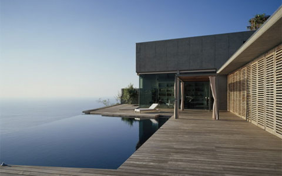

Colonial Home Plans
The quintessential Colonial-style home includes a symmetrical facade, shuttered windows, a large, triangular pediment over the front door and massive columns. In addition, Early American, saltbox, federal , and Georgian styles all fall under the "Colonial" umbrella. Historically speaking,these are the homes common in the original thirteen American colonies. The Colonial home plans being built in America today are actually part of what's called "Colonial Revival," which was first seen around 1880, and grew rapidly after World War I. Examples range from the simple, box-like shape of a saltbox design to a grand estate, such as Thomas Jefferson's Monticello.
Features
Rectangular, with a symmetrical façade
2-3 stories, with a gable roof
Front door with sidelights and topped by transom windows